Documentación de producto
Manual Cileo
Guía de uso de Cileo: inmuebles, contratos, cobranza, facturación (CFDI) y PLD. Cada sección explica, en pocos pasos, qué hace cada pantalla y cómo se usa.
Actualizado: 9 de octubre de 2026
Empezar aquí
Introducción
Cileo es una plataforma web para administrar arrendamiento inmobiliario. Centraliza en un solo lugar los contratos, la cobranza, la facturación (CFDI) y la gestión de PLD, con información trazable. Usa el menú lateral para navegar; el vocabulario está en el Glosario y las dudas comunes en las Preguntas frecuentes.
Para quién es. Propietarios, administradores de inmuebles y equipos que rentan departamentos, locales, oficinas o bodegas, desde un primer contrato hasta portafolios corporativos multiciudad.
No requiere instalación. Funciona desde el navegador en app.cileo.io; solo inicias sesión con tu cuenta.
Menú principal. Dashboard, Inmuebles, Contratos, Cobranza, PLD, Contactos y Administración (Usuarios, Datos Fiscales, Cuentas e Impuestos). Según tu cuenta, también aparecen Reportes y Suscripción. Solo el administrador ve Administración y Suscripción.
Ruta recomendada para poner en marcha tu operación.
Así se recorre esa ruta:
- Datos fiscales: la información del emisor para facturar (RFC, régimen, domicilio y certificados), en Administración y luego Datos Fiscales. Puedes guardarlos sin los certificados (CSD) y completarlos después; para timbrar facturas sí se necesitan.
- Inmuebles: registra tus propiedades y sus localidades.
- Contactos: da de alta a propietarios e inquilinos.
- Contratos: crea los contratos de arrendamiento.
- Cobranza: genera cobros y dales seguimiento.
01 · Panorama
Dashboard
Los indicadores clave de tu operación, en tres vistas que se cambian con la barra lateral izquierda. Navega entre ellas con el carrusel. Todo se filtra por periodo y portafolio.
02 · Propiedades
Inmuebles
El catálogo de tus propiedades. Cada inmueble agrupa sus localidades (unidades rentables) y es la base sobre la que se crean contratos y cobros.
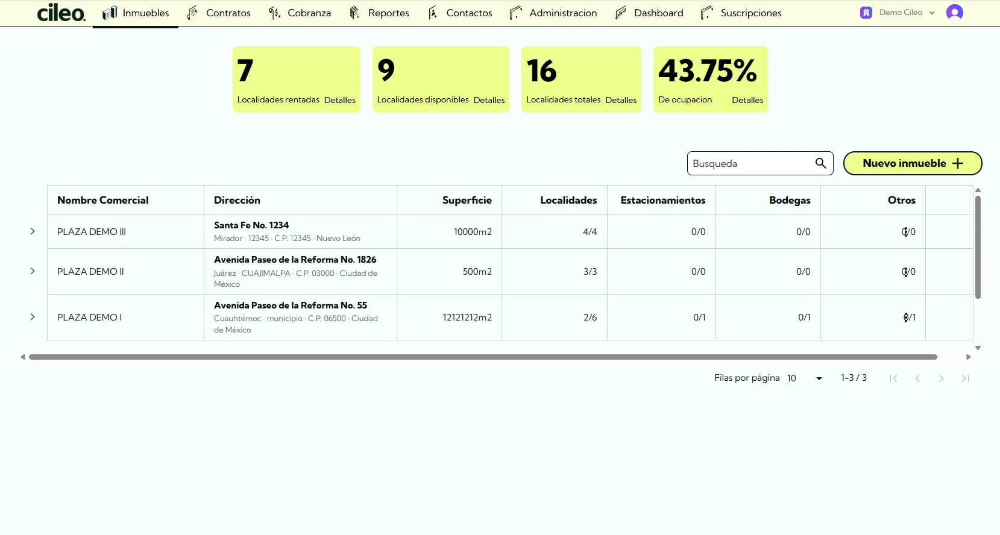
132Resumen
Localidades rentadas, disponibles, totales y porcentaje de ocupación.
Lista
Nombre comercial, dirección, superficie y localidades por propiedad.
Nuevo inmueble
El botón Nuevo inmueble da de alta una propiedad; el buscador acota la lista.
03 · Arrendamiento
Contratos
El acuerdo de arrendamiento que conecta un inmueble, un inquilino y un propietario. Es el eje que alimenta la cobranza, la facturación y el PLD.
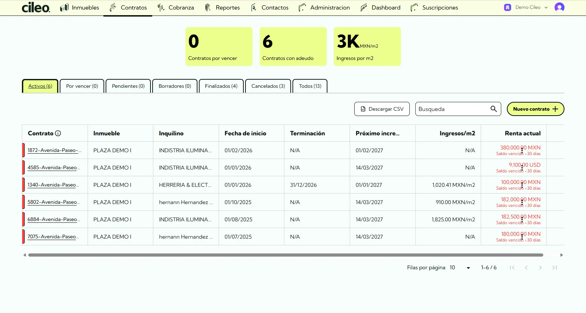
Cada contrato con su inmueble, inquilino, vigencia y estatus.
Desde el detalle del contrato puedes Editar, Cancelar (con confirmación), agregar comentarios y generar un Nuevo cobro.
Alta de contrato (asistente)
En Contratos, el botón Nuevo contrato abre un asistente guiado. Estos son los pasos, en orden:
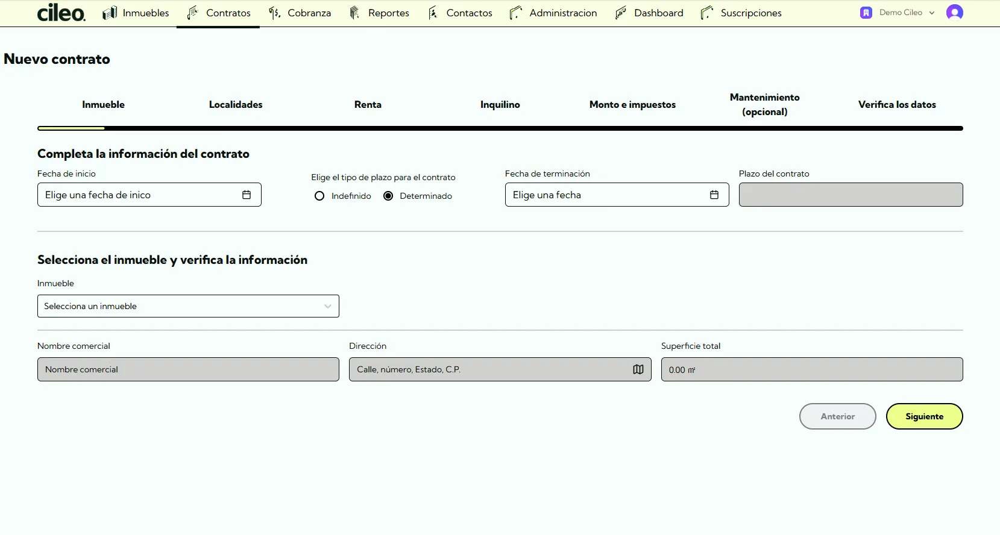
- En el primer paso defines la fecha de inicio, el tipo de plazo y seleccionas el inmueble.
- Plazo: determinado o indefinido (sin fecha de fin). Los dos generan cobros con normalidad.
- Periodicidad de la renta: Mensual, Bimestral, Trimestral, Cuatrimestral, Semestral o Anual.
- Sufijo del concepto (opcional, en renta y en mantenimiento): texto que se agrega al final del concepto del cobro y de la factura. El concepto se arma con el prefijo, el periodo de renta, las localidades y el sufijo. Es el lugar para incluir, por ejemplo, la dirección del inmueble o una o varias cuentas prediales.
- Mantenimiento es un paso opcional, con su propio concepto y periodicidad.
- Borrador: puedes guardar el contrato incompleto y, cuando esté listo, usar Confirmar contrato para activarlo. Un borrador se puede guardar aunque el propietario todavía no tenga datos fiscales.
Tabla de contratos y vistas
La tabla muestra Contrato, Inmueble, Localidades, Propietario, Inquilino, fechas, Próximo incremento, Renta actual y Moneda, con paginación y búsqueda (también por localidad). Al hacer clic en el encabezado de una columna, la tabla se ordena por ella.
- El botón de preferencias (ícono de ajustes, junto a los filtros; al pasar el cursor dice Preferencias: vistas y columnas) abre un panel con dos pestañas: Vistas y Columnas.
- En Columnas eliges cuáles ver, las reordenas (arrastrando o con las flechas) y ajustas su ancho. Si la pantalla no alcanza para todas, algunas se marcan como oculta por ancho y puedes mostrarlas desde ahí.
- En Vistas guardas columnas, orden y filas por página. Puedes Guardar vista, Guardar cambios, Guardar como nueva, Renombrar, Eliminar y elegir cuál usar al abrir la tabla.
- Las vistas son de cada usuario: lo que guardes no cambia lo que ven tus compañeros.
- Con el menú Descargar obtienes el CSV con todas las columnas. Solo se descargan las filas visibles: amplía las filas por página para incluir todo.
- Al buscar, los contadores de las pestañas siguen mostrando los totales generales.
Documentos del contrato
Al crear o editar un contrato puedes adjuntar documentos: archivos PDF, JPG, PNG, DOC o DOCX de hasta 20 MB cada uno, con nombre y fechas de emisión y vencimiento opcionales. Es donde se guarda, por ejemplo, el contrato firmado.
Desde el detalle del contrato tienes Ver documentos, con vista previa y descarga, y Editar documentos.
04 · Cobranza
Cobranza
Aquí se generan, controlan y dan seguimiento los cobros de renta y los conceptos asociados. Arriba se muestra el panorama de cartera: cuentas por cobrar pendientes y vencidas, pagadas, y los totales vencido y pagado del periodo.
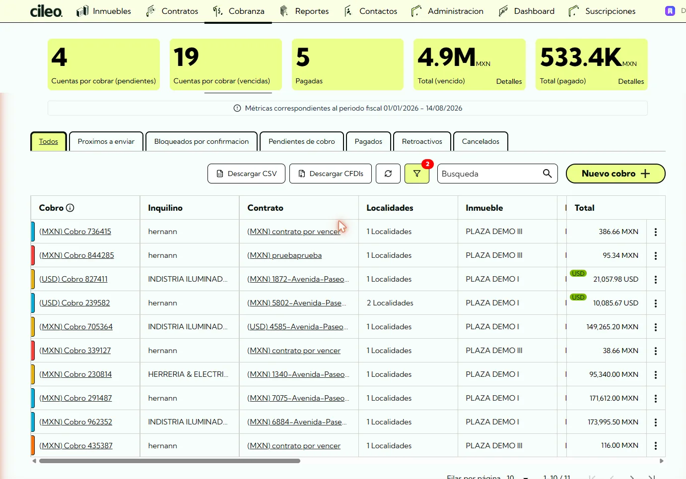
1234Panorama de cartera
Cuentas por cobrar pendientes y vencidas, pagadas, y los totales del periodo.
Pestañas por estatus
Todos, Pendiente de envío, Pendiente de confirmación, Enviado, Pagado, Retroactivos y Cancelado.
Nuevo cobro y acciones
El menú de tres puntos ofrece Generar factura, Agregar pago, Enviar recordatorio y Generar nota de crédito.
Multi-moneda y descargas
Cobros en pesos o en dólares; con el menú Descargar obtienes el CSV o los CFDIs.
Estatus de un cobro. Los primeros siete son también pestañas de la tabla; los dos últimos son estados que aparecen durante una cancelación:
- Pendiente de envío: generado, todavía no se envía al inquilino.
- Pendiente de confirmación: necesita que confirmes un dato antes de enviarse.
- Enviado: ya se envió al inquilino y espera pago.
- Parcialmente pagado: tiene abonos, pero queda saldo.
- Pagado: liquidado por completo.
- Retroactivos: cobros de periodos anteriores.
- Cancelado: anulado.
- Cancelación pendiente: se solicitó al SAT cancelar la factura y se espera su respuesta.
- Cancelación no aprobada: el SAT rechazó la cancelación. Ver Cancelaciones y respuestas del SAT.
Vencido no es una pestaña. Un cobro está vencido cuando pasó su fecha de pago y conserva saldo pendiente; eso se refleja en la cartera vencida y en la morosidad.
En las pestañas Todos, Enviado, Pagado y Cancelado hay un selector por tipo de comprobante: Facturas, Complementos de pago y Notas de crédito, cada uno con sus propias columnas. Si hay cobros con cancelación rechazada, la pestaña Cancelado muestra un aviso para que los atiendas.
¿Cuándo un cobro queda Pendiente de confirmación? Cuando hace falta confirmar un dato antes de enviarlo: tipo de cambio por definir (cobros en dólares), cuenta de depósito pendiente, un incremento de renta o de mantenimiento (por INPC o por una variación de monto), o un tipo de renta mixto. Estos cobros muestran la acción Confirmar y enviar. Antes se llamaba Bloqueado por confirmación.
Multi-moneda. Los cobros pueden ser en pesos o en dólares, con el tipo de cambio del DOF registrado. Si el pago llega en una moneda distinta a la de la factura, al registrarlo capturas el tipo de cambio y lo puedes editar; el complemento de pago se emite con esa equivalencia. Los pagos cancelados ya no cuentan en el Dashboard, en PLD ni en los reportes.
Tabla de cobros y vistas
La tabla de cobros muestra Cobro, Inquilino · Contrato, Inmueble · Localidades, Propietario, Estado, Fechas, Conceptos, Tipo de cobro, CFDIs, Serie y Folio de la factura principal, Monto sin impuestos y Total. Al hacer clic en el encabezado se ordena por Inquilino · Contrato, Inmueble, Propietario, Fechas, Serie o Folio.
- El botón de preferencias (ícono de ajustes; al pasar el cursor dice Preferencias: vistas y columnas) funciona igual que en Contratos: en Columnas eliges cuáles ver, las reordenas y ajustas su ancho, y en Vistas guardas esa combinación con su orden y filas por página. Las vistas son de cada usuario.
- Las tablas de Complementos de pago y Notas de crédito (selector por tipo de comprobante) tienen sus propias columnas, orden y vistas.
- Con el menú Descargar eliges CSV (todas las columnas, con totales fiscales) o CFDIs (facturas en XML y PDF dentro de un .zip, agrupadas por inquilino, contrato y mes). Solo se descargan las filas visibles: amplía las filas por página para incluir todo.
- Los botones de la barra (filtros, restablecer filtros, preferencias y descargas) son íconos; al pasar el cursor muestran su nombre.
Acciones de un cobro
Cada cobro abre sus acciones desde el menú de tres puntos. Así se ven sus formularios.
Nuevo cobro. Se crea desde Cobranza con el botón Nuevo cobro, o desde el contrato. En el paso 1 eliges inquilino, contrato y tipo de cobro; en el paso 2 agregas los conceptos (renta, mantenimiento y los que apliquen) con sus impuestos. Requisito: el contrato debe tener una cuenta de depósito definida.
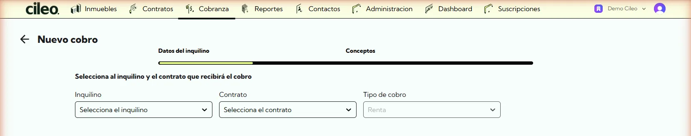
Aplicar pago. Registra un pago sobre un cobro. Los campos base siempre aparecen y son obligatorios: Cobro, Fecha de pago, Hora de pago, Importe, Método de pago y Cuenta de depósito. El importe debe ser mayor a cero y no puede exceder el restante del cobro. Otros tres campos se muestran u ocultan, y se vuelven obligatorios, según el método de pago:
| Método de pago (SAT) | Cuenta de origen | Número de rastreo | Comprobante |
|---|---|---|---|
| 01 Efectivo · 99 Por definir | no se muestra | no se muestra | no se muestra |
| 02 Cheque · 03 Transferencia · 27 A satisfacción del acreedor | opcional | opcional | opcional |
| 06 Dinero electrónico | no se muestra | obligatorio | obligatorio |
| Cualquier otro (04 tarjeta de crédito, 28 tarjeta de débito y demás) | obligatorio | obligatorio | obligatorio |
El comprobante acepta PDF, PNG o JPG. Al aplicar una nota de crédito como pago, el método cambia automáticamente a 17 Compensación y el comprobante lo define la nota, así que no se sube a mano.
Pago parcial. Se permiten abonos, salvo que el cobro ya tenga una factura timbrada como PUE (pago en una sola exhibición): en ese caso el saldo restante se liquida en un solo pago. Si la factura sigue en borrador, sí se permiten abonos.
Enviar cobro. Además del envío automático, cada cobro tiene la opción Enviar cobro para mandarlo de forma individual. Se habilita el día de su fecha de envío.
Generar nota de crédito. Reduce o corrige una factura ya emitida. Eliges el tipo de nota, revisas los datos de facturación y agregas los conceptos con su regla de impuestos; el sistema calcula subtotal e IVA. Si el monto supera la deuda actual, el excedente se convierte en saldo a favor del inquilino.
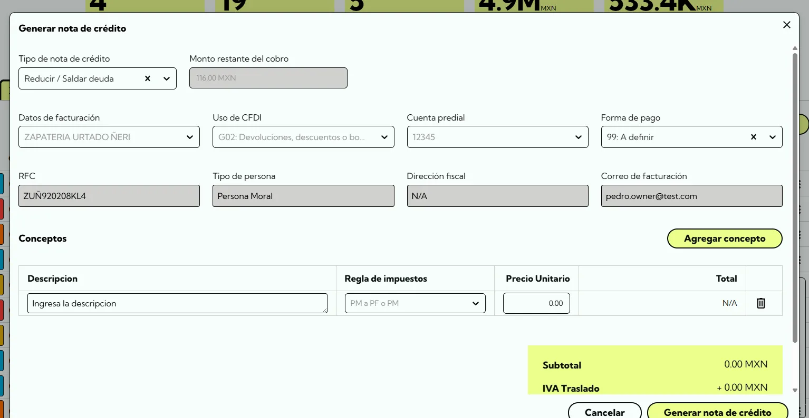
Otras acciones. Generar factura (emite el CFDI del cobro), Enviar recordatorio (aviso al inquilino que, según el caso, incluye el borrador o la factura), Editar recordatorios (también en cobros ya pagados), Editar cobro y Cancelar cobro. Cuando el cobro ya tiene comprobante, aparecen además Ver factura, Ver borrador y Ver CFDIs para consultarlo o descargarlo.
Para cancelar un pago o un cobro, y para sustituir una factura, revisa Cancelaciones y respuestas del SAT y Sustituir una factura.
Panel de filtros
El botón de filtros abre el panel de Filtros dinámicos: Fecha (año y mes, o un rango personalizado), Inmueble, Estado del contrato, Contrato, Tipo de localidad, Propietario e Inquilino. El mismo panel aplica en Cobranza, Dashboard y Reportes.
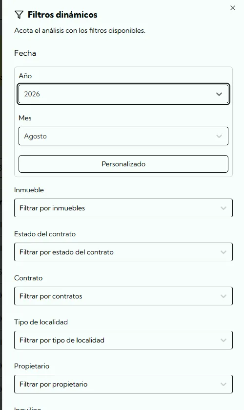
05 · Facturación
Facturación (CFDI)
Las facturas se generan ligadas a los cobros y a su periodo, para que lo facturado corresponda con lo cobrado.
- Borrador de factura: versión preliminar para revisar antes de emitir, o sea antes de timbrar en definitiva.
- Requisito para facturar: tener capturados los datos fiscales del emisor (RFC, régimen y certificados) en Datos Fiscales.
- El XML de las facturas emitidas se puede descargar, igual que el PDF.
Qué método de pago y qué uso de CFDI corresponden a tu operación conviene validarlo con tu contador.
Complementos de pago
Cuando una factura se emite como PPD (pago en parcialidades o diferido), cada pago que recibes se ampara con un complemento de pago: un CFDI aparte que acredita ese abono contra la factura original.
En Cobranza, el selector por tipo de comprobante te deja ver los Complementos con sus propias columnas. Si el pago llega en una moneda distinta a la de la factura, el complemento se emite con la equivalencia que capturaste al registrar el pago.
Las facturas PUE (pago en una sola exhibición) no llevan complemento: se liquidan en una sola exhibición.
Cancelaciones y respuestas del SAT
Cancelar un pago. Desde el menú del pago, Cancelar pago. Si el pago tiene complemento timbrado, se envía al SAT la solicitud de cancelación y el pago queda en proceso de cancelación. Iniciar el trámite no garantiza la cancelación: el SAT puede aceptarla o rechazarla, y el estatus se ve en Cileo. Reglas:
- Solo se puede cancelar el pago más reciente; cancela primero los posteriores.
- Los pagos de un cobro retroactivo no se cancelan: primero usa la acción Mover a pendientes de cobro del menú de ese cobro, en la pestaña Retroactivos.
- Si la factura del cobro es PUE y el pago no tiene complemento, Cancelar pago aparece bloqueado: lo que procede es cancelar la factura, no el pago. Escribe a soporte.
- No se puede cancelar si el cobro ya está cancelado o en proceso de cancelación, o si hay otra cancelación de pago en curso.
- Los pagos cancelados se pueden mostrar u ocultar en la tabla de pagos.
Cancelar un cobro. La acción Cancelar cobro pide un motivo: 01 Comprobante emitido con errores con relación, 02 Comprobante emitido con errores sin relación, o 03 No se llevó a cabo la operación. El motivo 01 solo procede si ya hay un cobro timbrado que lo sustituye. Si el cobro tiene factura timbrada, se solicita la cancelación al SAT y el cobro queda en Cancelación pendiente hasta su respuesta; la aceptación no está garantizada.
No se puede cancelar un cobro que tenga complementos de pago activos (hay que cancelarlos uno por uno primero) ni uno con nota de crédito asociada.
Si el SAT rechaza una cancelación. En el menú del pago, o del cobro cuando queda en Cancelación no aprobada, aparecen Reintentar cancelación, que vuelve a solicitarla al SAT, y Revertir cancelación, que regresa el pago o el cobro a un estado activo con una confirmación. Si no ves la acción, escribe a soporte.
Sustituir una factura
Al generar la factura de un cobro nuevo, o en su borrador, activa Sustitución de los CFDI previos y elige en CFDIs a sustituir las facturas anteriores. Es la vía para corregir una factura ya timbrada emitiendo una nueva que la reemplaza.
- No se puede sustituir una factura con notas de crédito activas, complementos de pago activos o CFDI relacionados; el selector indica el motivo.
- El cobro sustituido muestra el aviso de que fue sustituido, con enlace al nuevo, un ícono en la tabla y el estatus de factura Sustituido, disponible también en el filtro. Ver facturas muestra las dos.
- Un cobro sustituido solo se cancela con el motivo 01, ligado al CFDI que lo sustituye.
- Si un cobro sustituyó a otro que ya se canceló, no se puede cancelar: emite un nuevo cobro que lo sustituya.
Qué motivo y qué tipo de relación corresponden a tu caso lo valida tu contador.
06 · Cumplimiento
PLD / Cumplimiento
PLD es Prevención de Lavado de Dinero, formalmente PLD/FT porque incluye Financiamiento al Terrorismo. El arrendamiento de inmuebles es una actividad vulnerable bajo la Ley Antilavado (LFPIORPI), con obligaciones de identificación y avisos.
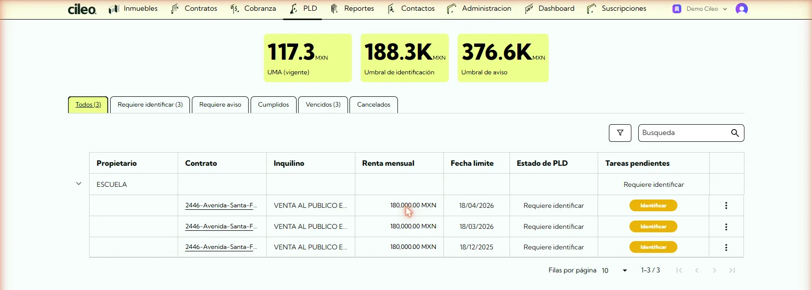
1234Umbrales (en UMA)
UMA vigente, umbral de identificación y umbral de aviso.
Tareas por estatus
Requiere identificar, Requiere aviso, Cumplidos, Vencidos y Cancelados.
Operaciones
Propietario, contrato, inquilino, renta, fecha límite y estado.
Acción
El botón Identificar inicia el flujo de cumplimiento.
Flujo de una tarea. En cada tarea tienes además Descargar documentos, Descargar XML y Descargar comprobante.
El Dashboard muestra la tasa de cumplimiento PLD, los contratos con PLD vencido, los próximos a vencer y los inquilinos con documentos faltantes.
Cileo te ayuda a gestionar las tareas y la documentación de PLD, pero completar una tarea en Cileo no confirma la presentación ante la autoridad ni garantiza el cumplimiento; valida tus obligaciones con tu asesor. El módulo no está incluido en el plan Básico. Si no ves la sección PLD, escribe a soporte.
07 · Análisis
Reportes
Reportes para análisis y revisión contable. Se filtran con el mismo panel de filtros del resto del sistema.
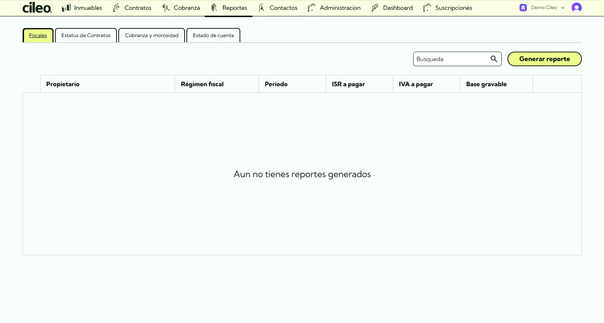
- Estado de cuenta: cobros, pagos y saldos de un inquilino, contrato o propietario en un periodo.
- Cobranza y morosidad.
- Estatus de contratos.
- Fiscales de propietario.
08 · Directorio
Contactos
El directorio de inquilinos y propietarios, con sus datos de identificación y contacto.
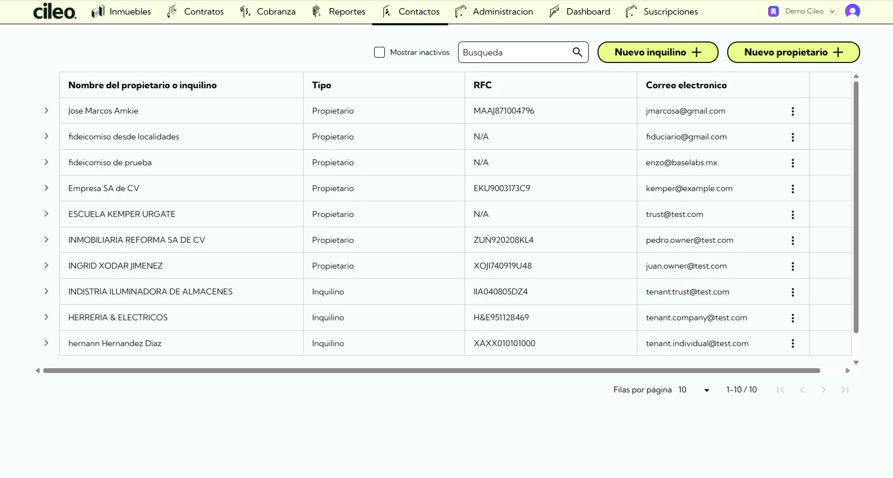
- Alta: usa Nuevo inquilino o Nuevo propietario según corresponda.
- Propietario: dueño del inmueble, a quien pertenece la renta y, cuando aplica, a cuyo nombre se factura.
- Inquilino: quien renta y recibe los cobros y las facturas. Puede ser persona física o moral.
- Gestión: puedes agregar notas, editar o marcar como inactivo para conservar el historial.
09 · Administración
Usuarios y permisos
En Administración, la sección Usuarios permite dar de alta a las personas de tu equipo con el botón Nuevo usuario. Cada usuario tiene un rol que define sus permisos.
Lo que cada quien ve depende de ese rol: algunas secciones, como Administración y Suscripción, solo las ve el administrador. Además, ciertas funciones dependen del plan contratado o de su habilitación en tu cuenta.
Si no puedes entrar o no ves una sección, revisa tus permisos con el administrador de tu cuenta.
10 · Administración
Datos Fiscales
La información fiscal del emisor para facturar. Se asocia a uno o más contratos y se organiza en tres bloques.
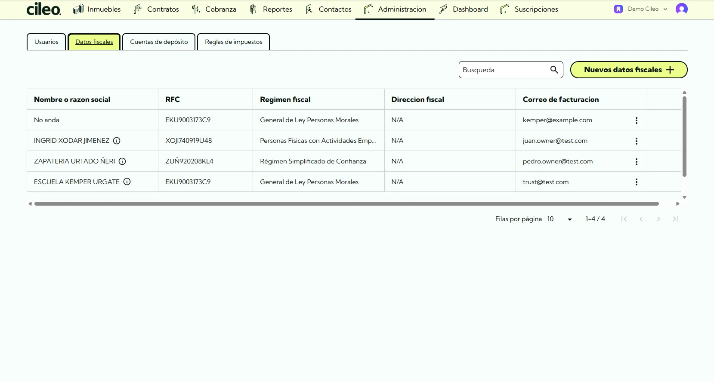
- Información fiscal: RFC, nombre o razón social, tipo de persona, régimen fiscal, código postal y correo de facturación.
- Dirección fiscal: se captura al activar el interruptor Completar dirección fiscal.
- Facturación y certificados: al activar Completar facturación y certificados capturas los archivos .cer y .key, la contraseña del CSD, la opción Enviar copia de facturas por correo y los correos adicionales.
La dirección y los certificados son opcionales al guardar, pero sin certificados no se pueden timbrar facturas. Después de guardar el CSD, el interruptor de facturación y certificados queda fijo.
Unos datos fiscales en uso por contratos activos no pueden eliminarse mientras sigan asociados. Si necesitas corregir un dato y no puedes editarlo, escribe a soporte.
11 · Administración
Cuentas
En Administración, Cuentas guarda las cuentas bancarias y sus cotitulares. Son las que después se eligen como cuenta de depósito en los contratos, y por eso un contrato necesita una cuenta definida para poder generar cobros.
12 · Administración
Impuestos
Las reglas de impuestos (IVA y retenciones) que se aplican a los conceptos facturables. Cada regla se puede activar o desactivar, y las cuentas nuevas ya traen reglas por defecto.
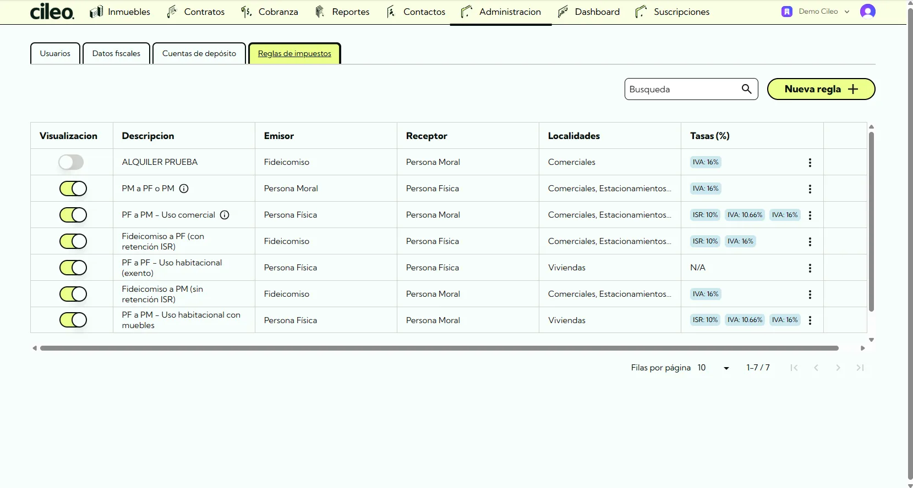
El catálogo de claves de producto o servicio del SAT incluye, entre otras, servicios de limpieza de edificios (76111500) y agua (50202301 y 83101509), para facturar esos conceptos con su propia clave.
La elección de la clave y de la regla de impuestos que corresponden a tu caso conviene validarla con tu contador.
13 · Administración
Migración y carga masiva
Si vienes de otro sistema, puedes cargar tu información de forma masiva en lugar de capturarla una por una.
- Solicita a soporte una revisión del alcance y la habilitación de la carga masiva en tu cuenta.
- Ya habilitada, en Administración eliges Subir plantilla: descargas la plantilla, la llenas y subes el archivo de Excel (.xlsx).
- También puedes optar por la Captura manual si prefieres ir registrando la información a mano.
14 · Tu cuenta
Planes y precios
Los planes se miden por contratos activos, no por inmuebles, porque un mismo inmueble puede tener varios contratos. Puedes cambiar de plan cuando crezcas.
| Plan | Contratos activos | RFC emisores | Facturas por mes | Mensual (MXN) | Plan anual (MXN al mes) |
|---|---|---|---|---|---|
| Básico | 1 a 10 | 1 | hasta 50 | $2,500 | $2,125 |
| En crecimiento | 11 a 50 | 3 | hasta 250 | $7,500 | $6,375 |
| Profesional (Recomendado) | 51 a 100 | 5 | hasta 500 | $12,000 | $10,200 |
| Corporativa | más de 100 | ilimitados | a la medida | a la medida | a la medida |
- El módulo PLD está incluido en En crecimiento, Profesional y Corporativa; no en Básico.
- El timbrado está incluido en el precio del plan: no se cobra por timbre. El límite es el número de facturas por mes de tu plan y no se puede rebasar; si necesitas más, cambia de plan.
- Precios en pesos mexicanos y no incluyen IVA.
- Con la contratación anual ahorras 15% frente al mensual; se factura una vez al año y la tabla muestra el equivalente mensual.
- La prueba de 30 días sin costo aplica solo en En crecimiento y Profesional, una sola vez por cuenta. Básico no tiene prueba.
- En Corporativa, el precio y el volumen de facturación se definen con un asesor.
Para qué perfil es cada plan. Básico, para propietarios independientes, rentas individuales y primeras inversiones. En crecimiento, para habitacional, locales y carteras pequeñas. Profesional, para edificios, retail, uso mixto y administración profesional. Corporativa, para fondos, corporativos y portafolios multiciudad.
Administrar tu suscripción
Si en tu cuenta aparece Suscripción y dentro Administrar suscripción, desde ahí puedes hacer tres cosas. La sección se habilita por cuenta y solo la ve el administrador; si no aparece, pídesela a tu administrador o escribe a soporte.
- Cambiar de plan: mejora o reduce tu plan. Ves una vista previa antes de confirmar y, si algo impide el cambio, se explica el motivo.
- Cambiar método de pago: débito automático con tarjeta, incluso una tarjeta guardada, o pago manual por transferencia. El cambio aplica al terminar el periodo que ya pagaste.
- Cancelar suscripción: conservas el acceso hasta el final del periodo pagado.
Avisos. Si tu suscripción no tiene método de pago, Cileo te pide elegirlo, y también es necesario para cambiar de plan. Si pagas por transferencia, antes de que termine el periodo se te recuerda pagar tu orden para no perder el acceso. Si no eres administrador, el aviso te pide contactarlo. Si la suscripción queda inactiva, el acceso se limita hasta regularizarla.
15 · Tu cuenta
Soporte y contacto
Si algo no aparece en esta guía, o si tu caso tiene montos, folios o facturas concretas de tu cuenta, escríbenos: una persona del equipo lo revisa contigo.
Hablar con una persona. En el chat basta con pedirlo, por ejemplo quiero hablar con alguien, con un agente o con un asesor, y te atiende una persona del equipo de Cileo.
No puedo entrar o no veo ciertas secciones. Revisa tus permisos con el administrador de tu cuenta. El acceso depende del rol del usuario, y algunas funciones también dependen del plan o de su habilitación en tu cuenta.
Aceptación legal al entrar. Es la aceptación de términos que Cileo requiere para operar; debe completarse para continuar.
Referencia
Próximamente
Funciones anunciadas que todavía no están disponibles. No hay fechas de lanzamiento.
- IA aplicada a la operación: automatizar consultas y lectura inteligente de información, con patrones y alertas entre contratos y cobros.
- Facturación automática según pagos, ajustes o descuentos.
- Pagos en efectivo de tus inquilinos en tiendas afiliadas (OXXO, 7-Eleven, farmacias), además de tarjeta y transferencia centralizadas. Se refiere a la cobranza de rentas, no al pago de tu suscripción.
- Sincronización con portales comerciales de colocación de inmuebles.
- Integraciones vía API para flujos específicos.
Referencia
Glosario
Vocabulario oficial de la plataforma. Cada término usa el nombre con el que aparece en Cileo; cuando aplica, se indica la sección donde lo encuentras.
- Cileo
- Plataforma para administrar arrendamiento inmobiliario: centraliza contratos, cobranza, facturación y cumplimiento PLD en un solo lugar, con información trazable.
- Portafolio
- El conjunto total de inmuebles que administras dentro de tu cuenta. Los reportes y el Dashboard pueden filtrarse para ver todo el portafolio o una parte.
- Dashboard → Dashboard
- Pantalla de inicio con los indicadores clave: ingresos, ocupación, morosidad y estatus de cumplimiento en una sola vista.
- Cuenta
- El espacio de trabajo de tu organización dentro de Cileo, donde viven tus inmuebles, contratos y usuarios.
- Suscripción → Planes
- El plan contratado que habilita el uso de Cileo (Básico, En crecimiento, Profesional o Corporativa), definido por el número de contratos activos.
- Prueba (30 días) → Planes
- Periodo de evaluación sin costo, disponible una sola vez por cuenta y solo en los planes En crecimiento y Profesional.
- Usuario → Usuarios
- Persona con acceso a Cileo dentro de tu cuenta. Se administra desde Administración y luego Usuarios.
- Rol → Usuarios
- Nivel de permisos de un usuario. Define qué puede ver y hacer; por ejemplo, quién solo consulta y quién puede editar o administrar.
- Propietario → Contactos
- Dueño de uno o varios inmuebles. Es a quien pertenece la renta y, cuando aplica, a cuyo nombre se emiten las facturas.
- Inquilino → Contactos
- Persona física o moral que renta un inmueble bajo un contrato. Es quien recibe los cobros y las facturas.
- Contacto → Contactos
- Registro de una persona u organización (propietario, inquilino u otro) con sus datos de identificación y contacto.
- Administración → Administración
- Sección donde se configuran los elementos maestros de la cuenta: usuarios, datos fiscales, cuentas e impuestos.
- Inmueble o propiedad → Inmuebles
- Cada bien que administras: departamento, local, oficina, bodega y demás. Es la unidad base sobre la que se crean contratos y cobros.
- Localidad o unidad
- Espacio rentable dentro de un inmueble. En los indicadores de ocupación se cuentan como el total de unidades disponibles.
- Ocupado → Dashboard
- Inmueble o unidad con al menos un contrato activo en el periodo consultado.
- Vacante → Dashboard
- Inmueble o unidad sin contrato activo, que podría ofrecerse en renta.
- Ocupación
- Proporción de unidades ocupadas frente al total del portafolio. Es uno de los indicadores principales del Dashboard.
- Contrato → Contratos
- Acuerdo de arrendamiento entre un propietario y un inquilino sobre un inmueble, con su renta, vigencia y condiciones.
- Renta
- Monto periódico que el inquilino paga por el inmueble según el contrato.
- Periodicidad
- Cada cuánto se genera el cobro de la renta: mensual, bimestral, trimestral, cuatrimestral, semestral o anual.
- Depósito en garantía
- Cantidad que el inquilino entrega como garantía al inicio del contrato, por lo general reembolsable al término.
- Cuenta de depósito → Cuentas
- Cuenta bancaria asociada al contrato donde se reciben los pagos. Debe estar definida para poder generar cobros.
- Vigencia
- Periodo durante el cual el contrato está activo, con su fecha de inicio y de término.
- Plazo
- Determinado, con fecha de fin, o indefinido, sin ella. Los dos generan cobros con normalidad.
- Sufijo del concepto → Alta de contrato
- Texto opcional que se agrega al final del concepto del cobro y de la factura; sirve, por ejemplo, para incluir la dirección del inmueble o las cuentas prediales.
- Borrador de contrato → Alta de contrato
- Contrato guardado a medias, que se activa después con Confirmar contrato. Puede guardarse aunque el propietario aún no tenga datos fiscales.
- Contrato por vencer → Dashboard
- Contrato cuya fecha de término se aproxima, para dar seguimiento a su renovación.
- Renovación → Dashboard
- Extensión o recontratación de un arrendamiento que está por terminar.
- Mantenimiento
- Concepto asociado al contrato para cubrir gastos de conservación del inmueble, que puede cobrarse junto con la renta.
- Vista (de tabla) → Tabla y vistas
- Combinación guardada de columnas, orden y filas por página en las tablas de contratos, cobros, complementos y notas de crédito. Se administra desde el botón de preferencias de la tabla. Cada usuario tiene las suyas.
- Cobranza → Cobranza
- Sección donde se generan, controlan y dan seguimiento los cobros de renta y los conceptos asociados.
- Cobro
- Cargo generado a un inquilino por un periodo o concepto (renta, mantenimiento y demás). Es la unidad de trabajo de la cobranza.
- Concepto
- Cada línea que compone un cobro o una factura (renta, mantenimiento, depósito u otro), con su cantidad y precio.
- Estatus de cobro → Cobranza
- Situación de un cobro: Pendiente de envío, Pendiente de confirmación, Enviado, Parcialmente pagado, Pagado, Retroactivo, Cancelado, Cancelación pendiente o Cancelación no aprobada.
- Vencido → Cobranza
- Cobro cuya fecha de pago ya pasó y conserva saldo pendiente. No es una pestaña: se refleja en la cartera vencida y en la morosidad.
- Pendiente de confirmación → Cobranza
- Cobro que necesita que confirmes un dato antes de enviarse: tipo de cambio, cuenta de depósito, un incremento o un tipo de renta mixto. Antes se llamaba Bloqueado por confirmación.
- Pago parcial
- Abono que cubre solo una parte del monto de un cobro; el resto queda como saldo pendiente.
- Saldo pendiente
- Monto que aún falta por cobrar de uno o varios cobros.
- Cartera vencida o morosidad → Dashboard
- Suma de los cobros vencidos no pagados. Refleja el nivel de riesgo de la cartera.
- Saldo a favor
- Cantidad a favor del inquilino, por ejemplo cuando una nota de crédito supera la deuda actual. Queda disponible para cobros futuros.
- Conciliación
- Proceso de confirmar que los pagos recibidos corresponden con los cobros registrados, actualizando su estatus.
- Recordatorio de pago → Cobranza
- Aviso que se envía al inquilino sobre un cobro próximo o vencido; según el caso incluye el borrador o la factura.
- Línea de tiempo
- Historial cronológico de cobros, pagos y movimientos de un inquilino o contrato.
- Factura → Facturación
- Comprobante fiscal (CFDI) emitido por un cobro, ligado al contrato y al periodo correspondiente.
- CFDI
- Comprobante Fiscal Digital por Internet: el formato oficial de factura electrónica en México, regulado por el SAT.
- Borrador de factura → Facturación
- Versión preliminar de una factura antes de su emisión. Permite revisarla antes de timbrar en definitiva.
- Timbrado
- Proceso por el cual una factura obtiene validez fiscal oficial ante el SAT.
- PUE
- Pago en una sola exhibición. La factura se liquida de una vez y no lleva complemento de pago.
- PPD
- Pago en parcialidades o diferido. Cada pago recibido se ampara con un complemento de pago.
- Complemento de pago → Complementos de pago
- CFDI que ampara los pagos de una factura PPD.
- Nota de crédito
- Comprobante que reduce o corrige el monto de una factura ya emitida. Si supera la deuda actual, el excedente se convierte en saldo a favor del inquilino.
- Sustitución de CFDI → Sustituir una factura
- Emitir una factura nueva que reemplaza a una anterior con errores, relacionándolas entre sí.
- Motivo de cancelación → Cancelaciones
- Razón que el SAT exige al cancelar: 01 con errores con relación, 02 con errores sin relación, o 03 no se llevó a cabo la operación.
- Datos fiscales → Datos Fiscales
- Información fiscal del emisor necesaria para facturar: RFC, régimen, domicilio y certificados.
- Régimen fiscal
- Clasificación ante el SAT que determina las obligaciones fiscales del contribuyente, sea persona física o moral.
- Persona física o persona moral
- Distinción fiscal: una persona física es un individuo; una persona moral es una empresa u organización.
- RFC
- Registro Federal de Contribuyentes. Clave que identifica a cada contribuyente ante el SAT.
- CSD
- Certificado de Sello Digital. El certificado que el SAT otorga al emisor para firmar y timbrar sus facturas.
- Impuestos → Impuestos
- Configuración de las tasas aplicables, IVA o retenciones, que se calculan sobre los conceptos facturables.
- IVA
- Impuesto al Valor Agregado, que se agrega al monto de los conceptos gravados.
- ISR
- Impuesto Sobre la Renta, relevante en los reportes fiscales de propietarios.
- PLD → PLD
- Prevención de Lavado de Dinero. Conjunto de obligaciones legales que aplican a ciertas operaciones inmobiliarias.
- PLD/FT
- Prevención de Lavado de Dinero y Financiamiento al Terrorismo: la denominación formal completa del régimen. En Cileo, PLD y PLD/FT se refieren al mismo módulo.
- LFPIORPI
- Ley Federal para la Prevención e Identificación de Operaciones con Recursos de Procedencia Ilícita, conocida como Ley Antilavado.
- Actividad vulnerable
- Operación que la Ley Antilavado sujeta a obligaciones de PLD/FT. El arrendamiento es una de ellas.
- UIF
- Unidad de Inteligencia Financiera. Autoridad que, junto con el SAT, recibe y analiza los avisos derivados de actividades vulnerables.
- Aviso (PLD)
- Reporte que debe generarse y presentarse ante la autoridad como parte del cumplimiento de una operación.
- Trazabilidad
- Capacidad de reconstruir el historial completo de una operación (contrato, cobro, aviso), lista para auditoría o supervisión.
- Documentos faltantes → Dashboard
- Documentación de identificación o cumplimiento que aún no se ha cargado para un inquilino.
- Tasa de cumplimiento PLD → Dashboard
- Indicador que mide qué proporción de tus contratos está al día en sus obligaciones PLD.
- Expediente
- Conjunto de documentos e información de identificación que respalda el cumplimiento.
- Reportes → Reportes
- Sección con reportes de la operación para análisis, revisión contable y toma de decisiones.
- Estado de cuenta → Reportes
- Reporte que resume los cobros, pagos y saldos de un inquilino, contrato o propietario en un periodo.
- KPI o indicador clave
- Métrica resumen del Dashboard: ingresos del periodo, cobranza contra esperado, morosidad, días de atraso, ocupados y vacantes, contratos por vencer y tasa de cumplimiento PLD.
- Periodo
- Rango de fechas sobre el que se calculan los indicadores y los reportes.
- SAT
- Servicio de Administración Tributaria, la autoridad fiscal en México.
- UMA
- Unidad de Medida y Actualización. Referencia económica que se usa para determinar umbrales en obligaciones como las de PLD.
- INPC
- Índice Nacional de Precios al Consumidor. Indicador de inflación que puede usarse para actualizar montos, como los incrementos de renta.
- Tipo de cambio
- Valor de conversión entre monedas, aplicado cuando un contrato, un cobro o un pago se maneja en una moneda distinta al peso.
- Carga masiva → Migración y carga masiva
- Alta de información en bloque desde una plantilla de Excel, en lugar de capturarla registro por registro.
Ayuda
Preguntas frecuentes
Respuestas breves a las dudas más comunes. El vocabulario se explica en el Glosario.